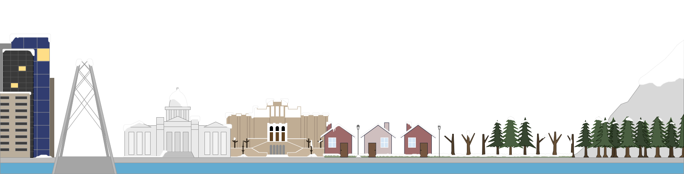
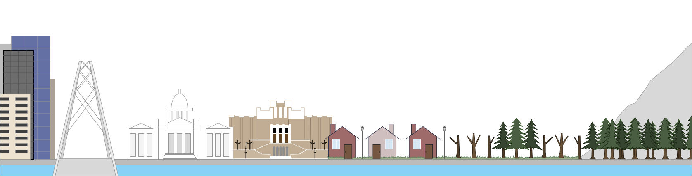
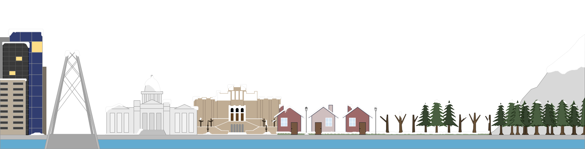
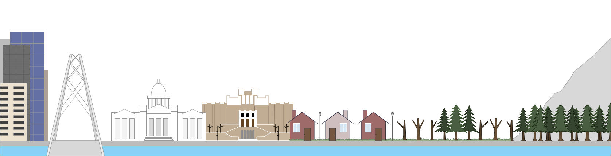
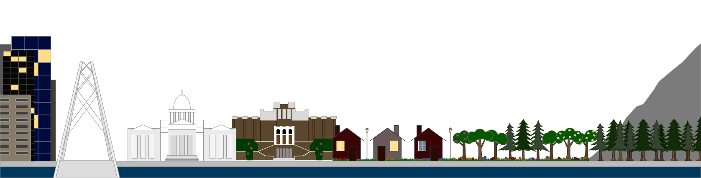
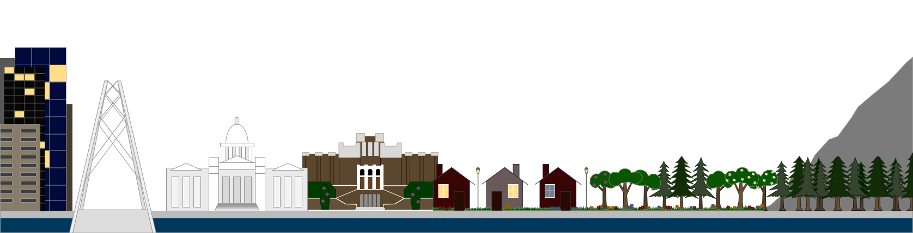

A southern drawl,
a world unseen
A city wall and
a trampoline, oh well
I don't mind
if you don't mind
'Cause I don't shine
if you don't shine
Before you jump,
tell me what you find
When you read my mind
I've been for a walk
(I've been for a walk)
on a winter's day
(on a winter's day)
I'd be safe and warm
(I'd be safe and warm)
if I was in LA
(if I was in LA)
California dreamin'
(California dreamin')
On such a winter's day

 
